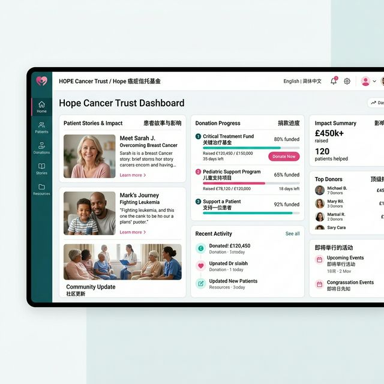
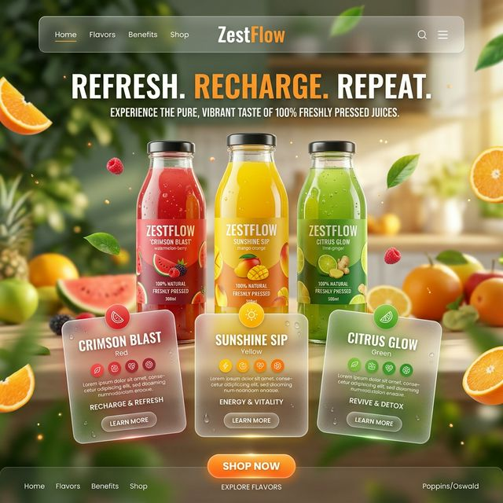
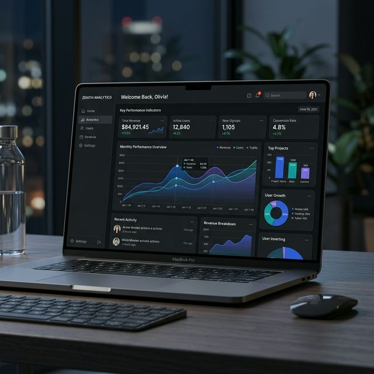
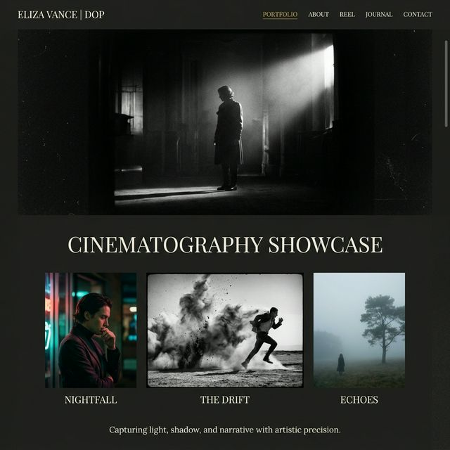
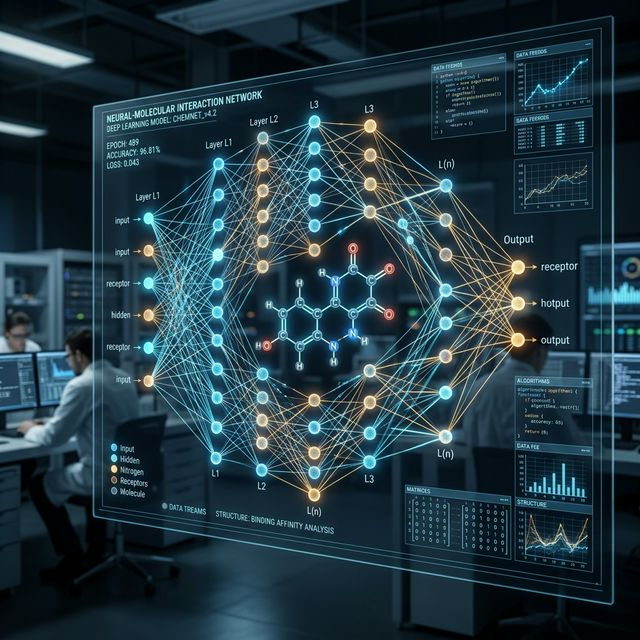
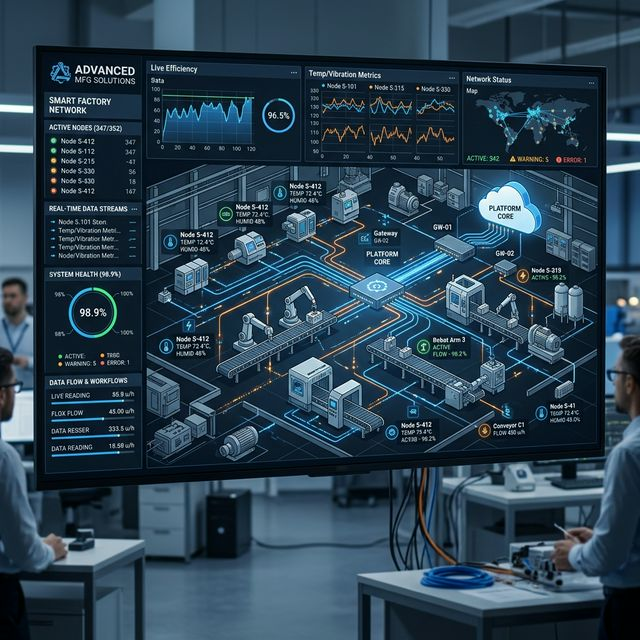

Portfolio Showcase
Back to Home
BANCAT Project
Digital Ecosystem for Cancer Aid

2GO Website
Freshness-first Beverage Brand

Asia Linkage Ltd.
Global Logistics & Supply Chain Platform

LizaDOP Portfolio
Cinematic Magazine-style Showcase

PFAS AI Discovery
Molecular Safety Prediction Pipeline
Hybrid GNN Model
Advanced Molecular Toxicity Prediction

RAG Automation
LLM-powered Knowledge Base system
IoT Monitoring
Distributed Agricultural Network